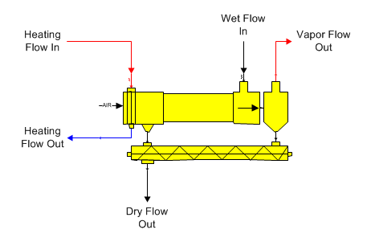
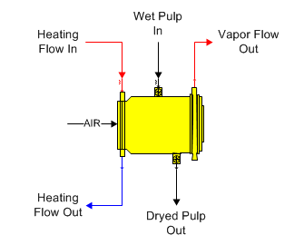
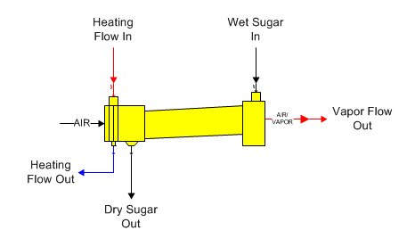

Dryers are used to remove water from an insoluble solid material. The calculations are the same for all types - only the shapes shown on the flow diagram are different.
Dryer The shape for a general purpose dryer is shown in the diagram below. The material to be dried goes into input port 0 and steam or condensate goes into input port 1 (zoom in on the shape to see the port identifiers - input port 1 is red). The steam/vapor or condensate flow into the dryer is not always a required flow.

Steam Pulp Dryer The shape for a steam pulp dryer is shown in the diagram below. The material to be dried goes into input port 0 and steam or condensate goes into input port 1 (zoom in on the shape to see the port identifiers - input port 1 is red). The steam/vapor or condensate flow into the dryer is not always a required flow.

Sugar Dryer The shape for a sugar dryer is shown in the diagram below. Syrup goes into input port 0 and steam goes into input port 1 (zoom in on the shape to see the port identifiers - input port 1 is red). Steam/vapor or condensate flow into the dryer not is always a required flow.

General Features A dryer station is used to dry a material flow stream (for example, pulp or sugar) using a heating flow (for example, steam or condensate) to heat an air stream to drive the water out of the material. Only one material flow into port 0 and one heating flow into port 1 is allowed. If the flow in contains sucrose crystals, crystal growth will occur until the flow out is at sucrose saturation. The flow out pressure will be at atmospheric while the vapor flow out pressure will correspond to the saturation temperature of the vapor leaving the dryer.
The heating flow into the dryer does not have to be a required flow because effectiveness can be used to control the transfer of heat from the heating flow to the air stream. If effectiveness is not used, the heating flow into the dryer will be a required flow; that is, Sugars will calculate the quantity of steam flowing into the dryer.
Entrainment loss can occur in the dryer from particles that are entrained in the air/vapor mixture leaving the dryer. Particles that are not recovered in a cyclone will leave with the air/vapor. The particles contain sucrose in the same percentage, as there is sucrose in the dried material leaving the dryer.
Heat loss can be entered for any heat loss that occurs due to convection, venting, conduction, or radiation of heat from the dryer to the surroundings. The % heat loss is for the amount of heat that is lost from the steam, or vapor, as heat is transferred to the wet material.
The vapor flow out of the dryer cannot be made a required flow (i.e., quantity of flow calculated by Sugars). Sugars will give a warning message if it detects that the vapor flow out of the dryer is required because a balance may not be possible. The condensate flow out of the dryer can be required if effectiveness is used for the heat transfer in the dryer.
The dried flow out of a dryer can be a required flow. If it is required, the wet flow into the dryer also will be required. The quantity of wet material flow into the dryer is not dependent on the properties of the dryer; so, making the dried flow out a required flow does not cause a warning message.